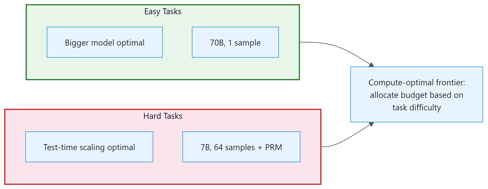

The question is never simply "is the model smart enough?" It is always "is the model smart enough given the time and money I am willing to spend?"
Chinchilla, Cost Conscious AI Agent
Making test-time compute pay off. The previous sections established that reasoning models can dramatically improve accuracy on hard problems. But "more thinking" is not free: every additional token costs money, takes time, and consumes GPU resources. This section addresses the central engineering question: how do you allocate a fixed inference compute budget to maximize performance? We cover the compute-optimal frontier, Monte Carlo Tree Search applied to language, the benchmarks used to evaluate reasoning models, and the cost analysis that determines whether reasoning models make economic sense for a given application. For the broader evaluation framework, see Chapter 42.
Prerequisites
This section builds on the test-time compute paradigm from Section 8.1, the model architectures from Section 8.2, and the training methods from Section 8.3 (especially process RLHF). Familiarity with evaluation methodology from Chapter 42 is helpful but not required. Knowledge of MCTS from game-playing AI (AlphaGo) provides useful context for Section 2.
8.5.1 The Compute-Optimal Inference Frontier
Math, code, and science benchmarks (AIME, MATH-500, HumanEval, GPQA) are well-covered above. The 2024-2025 generation of agentic reasoning benchmarks is equally important for practitioners building agent systems: TAU-bench (Yao et al., 2024) tests realistic multi-step tool use in customer-service and retail domains; BrowseComp (OpenAI, 2025) evaluates web-augmented research with multi-hop questions; GAIA v2 (Mialon et al., 2024) extends the original with more complex tool-use chains. All frontier models score below 50% on GAIA-Hard as of early 2026, making it one of the few unsaturated benchmarks. Pair these with SWE-bench when evaluating any agent system.
The compute-optimal inference problem, formalized by Snell et al. (2024), asks: given a total inference compute budget of $C$ FLOPs for a single query, what combination of model size and test-time strategies maximizes expected accuracy?
8.5.1.1 Formalizing the Trade-off
Let $C$ be the total inference compute budget. A model with $N$ parameters requires approximately $2N$ FLOPs per token generated (for dense transformers; MoE models use fewer active parameters). If the model generates $T$ total tokens (including thinking tokens), the compute cost is roughly $2NT$. For best-of-N with $K$ samples, the cost is $2NTK$.
The optimization problem is:
where $N$ is model size, $T$ is tokens per sample, and $K$ is number of samples.
A concrete comparison illustrates the trade-off. Suppose you have a budget of $C = 2.8 \times 10^{13}$ FLOPs. You can spend it two ways:
# Numeric example: comparing two strategies under the same FLOP budget
N_large = 70e9 # 70B parameter model
T_large = 200 # 200 tokens output
K_large = 1 # single pass
cost_large = 2 * N_large * T_large * K_large
print(f"Strategy A: 70B x 200 tokens x 1 sample = {cost_large:.1e} FLOPs")
N_small = 7e9 # 7B parameter model
T_small = 200 # 200 tokens per sample
K_small = 100 # best-of-100 with verifier
cost_small = 2 * N_small * T_small * K_small
print(f"Strategy B: 7B x 200 tokens x 100 samples = {cost_small:.1e} FLOPs")
print(f"Same budget: {cost_large == cost_small}")
# Both cost 2.8e13 FLOPs, but Strategy B wins on hard problems8.5.1.2 Key Findings
Snell et al. established several important results through experiments on mathematical reasoning benchmarks:
- Difficulty-dependent optimality: The optimal allocation shifts dramatically with problem difficulty. For easy problems (base accuracy >90%), a single pass through the largest affordable model is optimal. For hard problems (base accuracy 10% to 50%), using a smaller model with many samples and a reward model beats the larger model at the same total FLOPs.
- The 14x equivalence: On hard problems, a model with test-time compute scaling can match a model 14x larger (by parameter count) at the same total compute budget. This means that a 7B model with best-of-N (N=128) and a PRM verifier can match a ~100B model on specific hard reasoning tasks.
- Reward model quality matters: The benefit of test-time compute depends critically on having a good verifier. Without a reliable reward model, additional samples do not help because you cannot distinguish correct from incorrect solutions. The quality of the reward model sets the ceiling on test-time scaling benefits.
- Diminishing returns: Like train-time scaling, test-time scaling exhibits diminishing returns. Doubling inference compute typically yields a 5% to 15% accuracy improvement, with the gain decreasing as compute increases.
Why this matters for production systems. The compute-optimal frontier turns model selection from a single choice into a routing problem. Instead of picking one model for all queries, you classify each query by difficulty and route easy queries to a large model with a single pass (cheapest per correct answer) and hard queries to a smaller model with many samples plus a verifier (best accuracy per FLOP). This is the same tiered routing pattern discussed in Section 12.3, but applied at the inference-compute level rather than the model-selection level. In practice, the difficulty classifier itself can be surprisingly simple: a lightweight model that predicts whether the base model's first attempt will be correct.
The 14x model-size equivalence result has a counterintuitive implication: for hard problems, you should often downgrade your model and spend the saved FLOPs on sampling. A 7B model generating 128 solutions with a PRM verifier can match a 100B model on hard math, at the same total compute cost. But this only works when you have a reliable verifier. The quality of your reward model, not your language model, becomes the binding constraint on reasoning performance. This connects directly to the PRM training methods covered in Section 8.3.

8.5.2 Monte Carlo Tree Search for Language
Monte Carlo Tree Search (MCTS), the algorithm behind AlphaGo's superhuman Go play, can be adapted for structured reasoning over language. Instead of searching a tree of board positions, MCTS for language searches a tree of partial reasoning chains, where each node represents the reasoning so far and edges represent possible next reasoning steps.
8.5.2.1 Adapting MCTS for Reasoning
The four phases of MCTS (selection, expansion, simulation, backpropagation) map to language reasoning as follows:
- Selection: Starting from the root (the problem statement), traverse the tree using the UCB formula to balance exploration and exploitation. Visit the child node with the highest UCB score: $UCB(node) = V(node)/N(node) + c * sqrt(ln(N(parent))/N(node))$, where V is cumulative value, N is visit count, and c is an exploration constant.
- Expansion: At a leaf node, generate one or more candidate next reasoning steps using the language model. Each new step becomes a child node in the tree.
- Simulation (rollout): From the new node, complete the reasoning chain to produce a final answer. This can use the same model with lower quality settings (higher temperature, fewer tokens) for speed, or a smaller model.
- Backpropagation: Evaluate the completed solution (correct/incorrect), then propagate the result back up the tree. Increment visit counts and update value estimates for all nodes along the path from root to the expanded leaf.
After a fixed number of iterations (or a compute budget), the algorithm returns the solution found by following the most-visited child at each level from the root.
8.5.2.2 Key Design Choices for Language MCTS
- Step granularity: What constitutes a "step"? Options include sentence-level, paragraph-level, or reasoning-block-level (delimited by newlines or special tokens). Finer granularity allows more precise pruning but increases the tree's branching factor.
- Value function: MCTS requires a value function to evaluate partial solutions. Options include: a trained PRM (best quality), the LLM itself prompted as a self-evaluator (convenient but less reliable), or the rollout success rate (accurate but slow).
- Branching factor: How many candidate steps to generate at each expansion. Higher branching explores more options but dilutes compute. Typical values are 3 to 8 candidates per expansion.
- Stopping criterion: When to stop expanding. Options include a fixed compute budget (iterations or tokens), convergence detection (the best solution has not changed for N iterations), or confidence threshold (the highest-value leaf exceeds a score threshold).
8.5.2.3 AlphaProof: MCTS for Formal Mathematics
Google DeepMind's AlphaProof (2024) is the most impressive application of tree search to language reasoning. The system combines:
- A language model that proposes proof steps in the Lean 4 formal verification language
- MCTS to search over the proof tree, exploring different proof strategies
- Lean 4's type checker as a perfect verifier (a proof either compiles or it does not)
- Reinforcement learning to improve the language model's proof-step proposals over time
AlphaProof solved 4 of 6 problems from the 2024 International Mathematical Olympiad, earning a score equivalent to a silver medal. This is the strongest result to date in automated mathematical reasoning. The system's success demonstrates the power of combining language models with formal verification and structured search.
Why formal verification changes the game. The critical ingredient in AlphaProof is not the language model or the tree search; it is the Lean 4 type checker acting as a perfect verifier. In most reasoning tasks, verifying correctness is nearly as hard as generating the solution. But formal proof systems flip this asymmetry: checking a proof is trivial (the compiler does it), while finding one is extremely hard. This is why MCTS works so well here: each candidate proof step can be checked instantly, enabling the tree search to prune incorrect branches with zero false positives. For practical applications outside formal math, the absence of a perfect verifier is the main barrier to adopting tree search, which is why the reward model quality findings from Section 8.3 are so important.
AlphaProof sometimes spent three days on a single IMO problem, generating millions of candidate proof steps. A human mathematician solving the same problem at the IMO has 4.5 hours. But the comparison is not straightforward: AlphaProof's "three days" represents massively parallel computation across many GPUs. If you count wall-clock time on a single machine, AlphaProof would need much longer. The system trades compute for mathematical insight, which is precisely the test-time compute paradigm taken to its extreme.
8.5.3 Reasoning Benchmarks
Evaluating reasoning models requires benchmarks that specifically test multi-step logical reasoning, mathematical problem-solving, and complex analysis. Standard LLM benchmarks (MMLU, HellaSwag) are not sufficiently challenging to differentiate reasoning models. The following benchmarks have become the standard evaluation suite for reasoning capabilities.
8.5.3.1 Mathematics
| Benchmark | Tasks | Difficulty | Size | Notes |
|---|---|---|---|---|
| GSM8K | Grade school math word problems | Easy | 1,319 test | Largely saturated (>95% for reasoning models) |
| MATH-500 | Competition math (AMC, AIME level) | Medium | 500 test | Subset of MATH dataset; still challenging |
| AIME 2024 | American Invitational Mathematics Exam | Hard | 30 problems | The primary benchmark for top reasoning models |
| FrontierMath | Research-level mathematics | Extreme | ~100 problems | Designed to be unsolvable by current AI; o3 solved ~25% |
8.5.3.2 Coding
| Benchmark | Tasks | Difficulty | Notes |
|---|---|---|---|
| HumanEval / HumanEval+ | Function-level code generation | Easy to Medium | Largely saturated (>95%) |
| SWE-bench Verified | Real GitHub issues from popular repos | Hard | Most relevant for practical coding ability |
| LiveCodeBench | Competition programming (Codeforces, LeetCode) | Hard | Continuously updated with new problems |
8.5.3.3 Science and General Reasoning
| Benchmark | Tasks | Difficulty | Notes |
|---|---|---|---|
| GPQA Diamond | Graduate-level science (physics, chemistry, biology) | Hard | Questions written and validated by domain PhDs |
| ARC-AGI | Abstract reasoning and pattern completion | Hard | Tests generalization, not just memorization |
| MMLU-Pro | Multi-domain knowledge with harder questions | Medium | Harder version of MMLU with less guessability |
Reasoning benchmarks have several important limitations that practitioners should be aware of:
- Contamination risk: Many benchmark problems are publicly available on the internet and may appear in training data. AIME problems, for example, are published annually and have been available online for decades. Models may have memorized solutions rather than reasoning about them independently.
- Narrow task distribution: Strong performance on math competition problems does not guarantee strong performance on practical reasoning tasks (debugging code, analyzing contracts, diagnosing medical conditions).
- Evaluation setup variance: Different papers report different numbers for the same model because they use different evaluation setups: single attempt vs. best-of-N, different temperatures, different post-processing of answers.
- Small sample sizes: AIME 2024 has only 30 problems. Statistical confidence intervals on 30-problem benchmarks are wide. A 3-percentage-point difference between models may not be statistically significant.
For comprehensive evaluation methodology, see Chapter 42.
Benchmark scores tell us what reasoning models can do, but they do not tell us what they cost. Before committing to these models in production, we need to quantify the additional expense and decide when the performance gains justify the price.
8.5.4 The Reasoning Tax: Cost Analysis
The "reasoning tax" is the additional cost of using reasoning models compared to standard models for the same task. Understanding this tax is essential for determining whether reasoning models are economically viable for a given application.
8.5.4.1 Cost Breakdown Example
Consider a task where you need to process 10,000 complex analysis queries per day. We compare three approaches:
| Approach | Model | Tokens/Query | Cost/Query | Daily Cost | Accuracy |
|---|---|---|---|---|---|
| Standard | GPT-4o | 500 in + 200 out | $0.003 | $30 | 72% |
| Reasoning (medium) | o4-mini | 500 in + 2000 thinking + 200 out | $0.010 | $100 | 88% |
| Reasoning (high) | o3 | 500 in + 8000 thinking + 200 out | $0.33 | $3,300 | 94% |
| Routed (optimal) | Mixed | Varies | ~$0.015 | $150 | 90% |
The "routed (optimal)" row uses a difficulty classifier to send 70% of queries to GPT-4o and 30% to o4-mini. It achieves 90% accuracy (close to the reasoning model's 88% overall, higher on the hard subset) at a fraction of the cost of sending everything to a reasoning model.
8.5.4.2 When the Reasoning Tax Pays Off
The reasoning tax is justified when the value of the accuracy improvement exceeds the additional cost. Concretely:
For example, if each correct analysis saves $50 in manual review and accuracy improves from 72% to 90% on 10,000 daily queries, the additional 1,800 correct analyses per day save $90,000. The additional daily cost of $120 (routed approach) is trivially justified. But if each correct analysis saves only $0.01, the $120 additional cost far exceeds the $18 in value from improved accuracy.
8.5.5 Research Frontiers
The future of test-time compute scaling. Several active research directions are pushing the boundaries of what reasoning models can achieve:
- Test-time training (TTT): Instead of fixed model weights at inference time, TTT methods update the model's weights on each test example before generating a response. This is a more radical form of test-time compute that allows the model to literally learn from the problem before solving it. Early results (Sun et al., 2024) show promising improvements on distribution-shift tasks.
- Adaptive compute per layer: Current reasoning models allocate compute by generating more tokens (sequential computation). Research on early exiting and adaptive layer selection could allow models to allocate different amounts of per-token compute based on difficulty, without generating extra tokens.
- Continuous reasoning: Instead of discrete thinking tokens, some research explores continuous latent reasoning where the model performs computation in its hidden state space rather than in the token space. This could be more efficient than token-level reasoning because it avoids the bottleneck of serializing thoughts into text.
- Reasoning with tools: Combining reasoning with tool use (code execution, web search, database queries) during the thinking phase. OpenAI's o3 and o4-mini already support this, executing code within their reasoning chains to verify calculations. The integration of reasoning with the agentic frameworks discussed in Chapter 26 is an active frontier.
- Efficient reasoning through distillation: Can we distill the reasoning capability of large models (o3, R1) into much smaller models that reason efficiently? R1-Distill shows this is partially possible, but the accuracy gap widens as model size decreases. Closing this gap would democratize access to reasoning capabilities.
Show Answer
Current system (GPT-4o):
- Accuracy: 78% = 390 correct out of 500
- Value from correct analyses: 390 * $200 = $78,000/day
- Inference cost: 500 * $0.005 = $2.50/day
- Net value: $78,000 - $2.50 = $77,997.50/day
Reasoning model (o4-mini):
- Accuracy: 91% = 455 correct out of 500
- Value from correct analyses: 455 * $200 = $91,000/day
- Inference cost: 500 * $0.04 = $20/day
- Net value: $91,000 - $20 = $90,980/day
Net improvement: $90,980 - $77,997.50 = $12,982.50/day. The reasoning model is overwhelmingly worth it.
Break-even threshold: The additional cost is $20 - $2.50 = $17.50/day. Each additional correct document saves $200. So we need $17.50 / $200 = 0.0875 additional correct documents per day. Since we process 500 documents, this is 0.0875/500 = 0.0175% accuracy improvement. In practice, the break-even accuracy improvement is negligible (less than 0.02 percentage points), because the $200 value per correct document is so much larger than the per-document cost. This illustrates why reasoning models are almost always worth it when the value of accuracy is high, regardless of the cost multiplier.
Show Answer
Why MCTS is better for hard problems: Hard problems have low per-sample success rates (e.g., 5%). With best-of-N, each of the N samples is independent. To have a 50% chance of finding at least one correct solution with p=0.05, you need N = ln(0.5)/ln(0.95) = 14 samples. For p=0.01, you need N = 69 samples. Most of this compute is wasted on solutions that fail in the first few steps.
MCTS reuses information across samples. If a PRM identifies that a particular first step is promising (score 0.8) while another is unlikely to succeed (score 0.1), MCTS allocates more compute to the promising branch. It prunes failing branches early, concentrating compute on the most productive reasoning paths. This "informed search" is far more efficient than the "blind sampling" of best-of-N when the solution space is large and the success rate is low.
Why MCTS is worse for easy problems: For easy problems (p=0.9), most independent samples succeed. Best-of-N with N=4 has a 99.99% success rate. MCTS adds overhead: the tree structure, UCB calculations, PRM evaluations at each node, and the sequential nature of tree expansion. This overhead is wasted when simple independent sampling would have succeeded on the first try.
Switching criterion: Estimate the base model's success probability p on the problem (using a difficulty classifier or a fast initial sample). If p > 0.5, use best-of-N with small N (4 to 8). If p is between 0.1 and 0.5, use best-of-N with larger N (16 to 64). If p < 0.1, switch to MCTS where the search structure provides the most benefit. The threshold values should be calibrated empirically on a held-out evaluation set.
Show Answer
This is a deep question about the nature of reasoning in language models. A rigorous methodology would include:
Experiment 1: Perturbation robustness. Take the FrontierMath problems that o3 solves and create systematic perturbations: change numerical values, swap variable names, alter one condition, or add an irrelevant condition. Genuine reasoning should be robust to surface-level perturbations (the model adapts its approach to the new values) but sensitive to logical perturbations (changing a condition should change the answer, and the model should reflect this). If the model solves the original but fails on minor numerical variants, it suggests memorization of solution patterns rather than genuine reasoning.
Experiment 2: Proof verification. For problems where o3 produces a correct answer, examine the reasoning trace (if visible) or ask the model to produce a formal proof in Lean 4. If the reasoning is genuine, the model should be able to articulate valid proof steps. If it is pattern matching, the reasoning trace might contain non-sequiturs or skipped logical steps that happen to arrive at the right answer. The formal proof setting is especially revealing because Lean's type checker will reject invalid reasoning steps.
Experiment 3: Transfer across representations. Present the same mathematical problem in different representations: natural language, symbolic notation, visual/geometric form, or as a computer science problem isomorphic to the original. Genuine reasoning should transfer across representations (perhaps with reduced performance), while pattern matching would be representation-specific.
Experiment 4: Novel problem construction. Commission domain-expert mathematicians to create genuinely novel problems that combine concepts in ways that have never appeared in any publication. If o3 solves these at similar rates to FrontierMath, it supports genuine reasoning. If performance drops dramatically, it suggests reliance on similarity to training data.
A finding of "genuine reasoning" does not require the model to reason like a human. It means the model has internalized mathematical structure in a way that generalizes beyond its training distribution, which is a weaker but more testable claim than "the model understands mathematics."
- Compute-optimal inference is difficulty-dependent: on easy problems, use a large model with a single pass; on hard problems, use a smaller model with many samples and a verifier. The crossover point depends on base accuracy and reward model quality.
- MCTS for language brings structured search to reasoning, enabling efficient exploration of hard problems by pruning failing branches early. AlphaProof demonstrated this at the highest level by solving IMO problems.
- Reasoning benchmarks (AIME, MATH-500, SWE-bench, GPQA, FrontierMath) vary in difficulty and specificity. Practitioners should evaluate on task-specific benchmarks rather than relying on general benchmark scores.
- The reasoning tax (5x to 100x cost increase) is justified when the value of accuracy improvements exceeds the additional cost. For high-value tasks, the tax is almost always worth it; for low-value, high-volume tasks, routing is essential.
- Active research frontiers include test-time training, adaptive per-layer compute, continuous latent reasoning, and reasoning with tool use. These directions promise to make test-time compute scaling more efficient and broadly applicable.
This chapter has covered the full arc of reasoning models and test-time compute: the paradigm shift from train-time scaling (Section 8.1), the model architectures (Section 8.2), the training methods (Section 8.3), practical usage guidance (Section 8.4), and the compute economics and evaluation landscape (this section). The next chapter, Chapter 9: Inference Optimization, covers the infrastructure that makes all of this practical: quantization, KV-cache optimization, speculative decoding, and serving frameworks.
You are deploying a reasoning model in a production system that handles 10,000 queries per day. What infrastructure considerations differ from deploying a standard chat model?
Answer Sketch
Key differences: (1) Latency: reasoning models generate 5 to 50x more tokens, so response times are 5 to 50x longer. Need streaming responses and user-facing progress indicators. (2) Cost: 5 to 10x higher per-query cost requires careful budgeting and routing (send only complex queries to the reasoning model). (3) Timeout handling: some queries may take minutes; need graceful timeout policies and fallback to simpler models. (4) Caching: reasoning responses for repeated queries is highly valuable given the cost. (5) Monitoring: track reasoning chain length, success rate, and cost per query to optimize routing thresholds.
Write a prompt that instructs a reasoning model to produce structured output: a JSON object with fields for 'reasoning_steps' (array of step descriptions), 'final_answer', and 'confidence' (0 to 1). Parse the output and validate the structure.
Answer Sketch
Prompt: 'Solve this problem. Output your response as JSON with these fields: reasoning_steps (array of strings, each describing one step), final_answer (string), confidence (float 0 to 1). Problem: [...]'. Use json.loads() to parse and validate required fields exist. Common failure modes: the model may include reasoning text outside the JSON, produce invalid JSON with trailing commas, or hallucinate extra fields. Using structured output APIs (JSON mode) when available is more reliable than prompting alone.
Given a model's reasoning chain and the correct answer, design a rubric to evaluate reasoning quality beyond just answer correctness. What dimensions should you measure?
Answer Sketch
Dimensions: (1) Correctness of each step: is each individual reasoning step logically valid? (2) Relevance: does each step contribute to reaching the answer, or are there irrelevant detours? (3) Completeness: are all necessary steps present, or does the chain skip important reasoning? (4) Faithfulness: does the final answer actually follow from the reasoning (or was it guessed independently)? (5) Efficiency: does the chain reach the answer in a reasonable number of steps without unnecessary repetition? Scoring each dimension on a 1 to 5 scale gives a nuanced view of reasoning quality. A chain that reaches the right answer with incorrect intermediate steps should score lower than one with all correct steps.
Implement a reasoning ensemble that: (1) generates 5 independent CoT solutions, (2) extracts the final answer from each, (3) takes majority vote, and (4) if no majority exists, generates a 6th solution that reviews all 5 and synthesizes a final answer. Test on 10 problems.
Answer Sketch
For the synthesis step, prompt: 'Here are 5 attempts to solve this problem: [solutions]. Some may be correct and others wrong. Analyze each solution, identify errors, and give the final correct answer.' This meta-reasoning step adds cost but is only triggered when there is disagreement (no majority). Expected improvement: 5 to 10 points over single-chain reasoning. The synthesis approach is particularly effective because it benefits from seeing multiple perspectives and common error patterns.
For domains where reasoning correctness is critical (medical diagnosis, legal analysis, financial calculations), what verification mechanisms can be added around a reasoning model? How do you balance automation with human oversight?
Answer Sketch
Verification layers: (1) Automated checks: unit tests for code-based reasoning, dimensional analysis for physics, constraint checking for optimization problems. (2) Cross-model verification: run the same problem through multiple models and flag disagreements. (3) Symbolic verification: for math, check the answer by substitution or use a computer algebra system. (4) Human review: flag high-stakes decisions, low-confidence outputs, and edge cases for expert review. Balance: automate verification for routine cases where checks are reliable (math, code, structured data). Require human review when the domain lacks automated verification (medical interpretation, legal judgment). Use confidence calibration to determine the review threshold: review outputs where the model is uncertain or where the automated verifier and model disagree.
Exercises
What Comes Next
This concludes Chapter 8: Reasoning Models & Test-Time Compute on reasoning and test-time compute. In the next chapter, Chapter 9: Inference Optimization, we shift from reasoning strategies to the systems-level techniques that make LLM inference fast and cost-effective, including quantization, KV-cache management, and speculative decoding.
For evaluation methodology used to measure reasoning quality, see Chapter 42. For prompting techniques that elicit reasoning from non-reasoning models, see Section 12.3. For how reasoning models power agentic systems, see Chapter 26. For benchmark interpretation pitfalls, see Section 8.3.